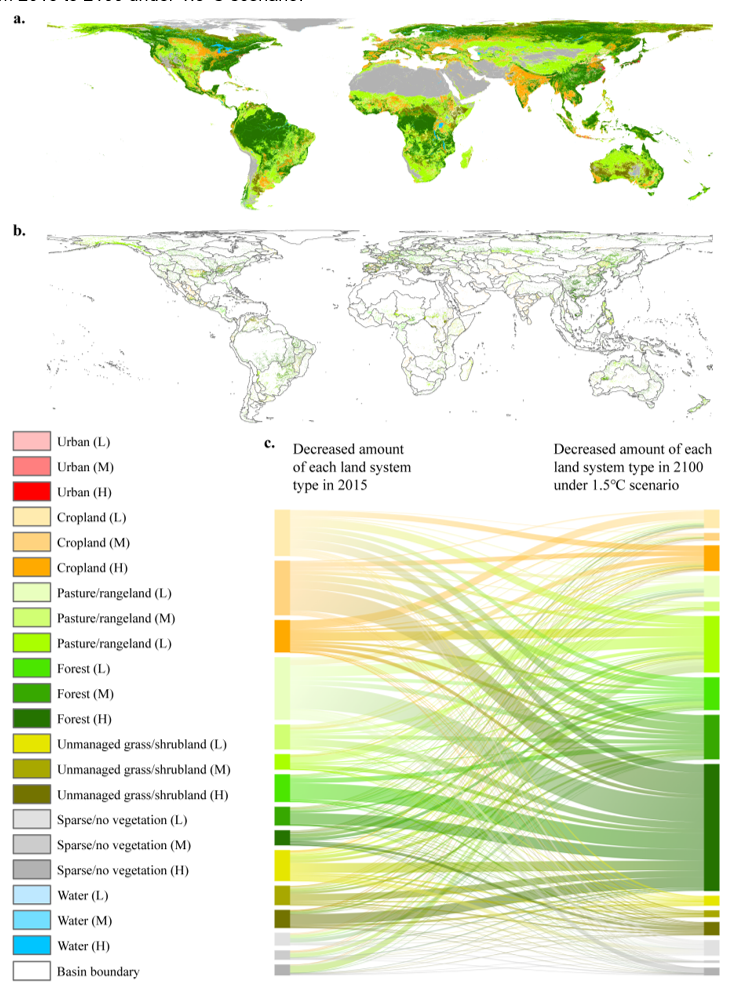

KAIST and International Research Team Publish Landmark Study in Nature Climate Change.

Daejeon, South Korea — In collaboration with an international team of researchers from China, Korea, and the United States, Professor Haewon McJeon from KAIST’s Graduate School of Green Growth & Sustainability has published a landmark study in Nature Climate Change that underscores the need to integrate sustainability into global decarbonization strategies.
The study evaluates the effects of climate pledges aimed at achieving the 1.5°C target set by the Paris Agreement, focusing on high-resolution impacts on global land use systems. By combining integrated assessment modeling with high-resolution land use modeling, the results reveal significant shifts in cropland use under a 1.5°C future. The findings highlight the importance of considering broader aspects of sustainability to prevent unintended consequences, such as threats to food security or environmental imbalances.
“Our analysis shows the importance of considering multiple aspects of sustainability when developing global decarbonization strategies,” said Professor McJeon. “A narrow focus on reducing greenhouse gas emissions alone, without addressing the wider sustainability context, can lead to unintended consequences.”
The research was conducted in collaboration with experts from Beijing Normal University, Peking University, and the University of Maryland, combining advanced computational modeling and domain expertise to provide a comprehensive analysis of the land use impacts of climate policies.
[paper link]: https://doi.org/10.1038/s41558-025-02294-1
한국어 요약
기후 위기 대응, 농경지 12.8% 줄여 식량 위기 경고
산업화 이전 대비 지구 평균 온도 상승을 1.5도 이내로 제한하겠다는 파리협정의 1.5도 목표를 달성하기 위해서는 전 세계적인 협력과 강력한 기후변화 감축 목표 설정이 필수적이다. 하지만 국제 공동연구진이 1.5도 목표 달성을 위한 정책이 실제로는 전 세계 농경지 면적을 약 12.8% 줄여 식량 위기안보에 부정적인 영향을 줄 수 있다는 연구 결과를 발표했다.
우리 대학 녹색성장지속가능대학원 전해원 교수와 베이징 사범대 페이차오 가오 교수가 이끄는 공동 연구팀이 파리협정의 1.5도 목표 달성이 전 세계 농경지와 식량 안보에 미치는 영향을 분석한 연구결과를 2일 밝혔다.
연구팀은 1.5도 목표 달성을 위한 기후 정책이 전 세계 농경지에 미치는 영향을 상세히 분석했다. 5제곱킬로미터(㎢) 단위로 전 세계 토지 변화를 예측했고 정밀하게 분석하였다.
기존 연구들에서는 1.5도 시나리오에서 농경지가 오히려 늘어날 것으로 예측했으나, 연구팀은 기후 정책이 분야 간에 미치는 영향과 토지 이용 강도를 함께 고려하면 전 세계 농경지가 12.8%가량 줄어들 것으로 분석했다. 특히 남미는 24%나 감소해 가장 큰 타격을 받을 것으로 예상됐고, 전체 농경지 감소의 81%가 개발도상국에 몰릴 것으로 분석됐다.
더 큰 문제는 주요 식량 수출국의 수출 능력이 12.6% 줄어들어 식량 수입에 의존하는 국가들의 식량 안보에 영향을 미친다는 것이다. 식량 생산 대국인 미국, 브라질, 아르헨티나의 농산물 수출 능력이 각각 10%, 25%, 4% 감소할 것으로 예측됐다.
전해원 교수는 “전 세계적 탈탄소화 전략을 세울 때는 여러 분야의 지속가능성을 두루 고려해야 한다”며 “온실가스 감축에만 집중한 나머지 지구생태계의 지속가능성이라는 더 큰 맥락을 보지 못하면 의도치 않은 부작용이 생길 수 있다”고 설명했다.
이어 “특히 개발도상국은 농경지가 줄어들고 수입 의존도는 높아지는 이중고를 겪을 수 있어, 탄소중립을 이루면서도 식량 안보를 지키기 위한 국제 협력이 꼭 필요하다”고 강조했다.
이 연구 결과는 우리 대학 전해원 교수와 베이징 사범대 송창칭 교수가 공동 교신저자로 국제 학술지 ’네이처 클라이밋 체인지(Nature Climate Change)’에 3월 24일자로 게재되었고 4월호 표지 논문으로 선정되었다. (논문명: Heterogeneous pressure on croplands from land-based strategies to meet the 1.5 °C target.)
[논문 링크]: https://doi.org/10.1038/s41558-025-02294-1
이번 연구는 카이스트와 중국 베이징사범대학교, 북경대학교, 미국 메릴랜드대학교 연구진들과 공동으로 수행됐다.
참고로, 본 연구팀은 2021년 사이언스(Science)지에 발표된 첫 연구를 통해 현재 감축안으로는 지구 온도 상승을 1.5도 아래로 유지할 확률이 11%에 그친다는 사실을 밝혔고 각국의 온실가스 감축목표를 이행하는 경우에도 2도 이상 기온이 오를 확률을 예측했다.
※ Ou et al. 2021. Can updated climate pledges limit warming well below 2 degrees C? Science, 374(6568)
이어 2022년 네이처 클라이밋 체인지(Nature Climate Change)에 발표된 두 번째 연구에서 연구팀은 1.5도 목표 달성을 위한 구체적인 방안으로 제시한 세 가지 핵심 전략은 첫째, 2030년까지 각국의 단기 감축목표를 상향하고, 둘째, 2030년 이후 탈탄소화 속도를 기존 연평균 2%에서 최대 8%까지 높이며, 셋째, 각국의 탄소중립 달성 시점을 최대 10년까지 앞당겨야 한다는 것이다.
특히 2030년 이후로 목표 상향을 미루면 1.5도 달성이 가능하더라도 수십 년간 지구 온도가 크게 오르는‘오버슈트’현상이 발생할 수 있다고 경고했다.
※ Iyer et al. 2022. Ratcheting of climate pledges needed to limit peak global warming. Nature Climate Change, 12(12).